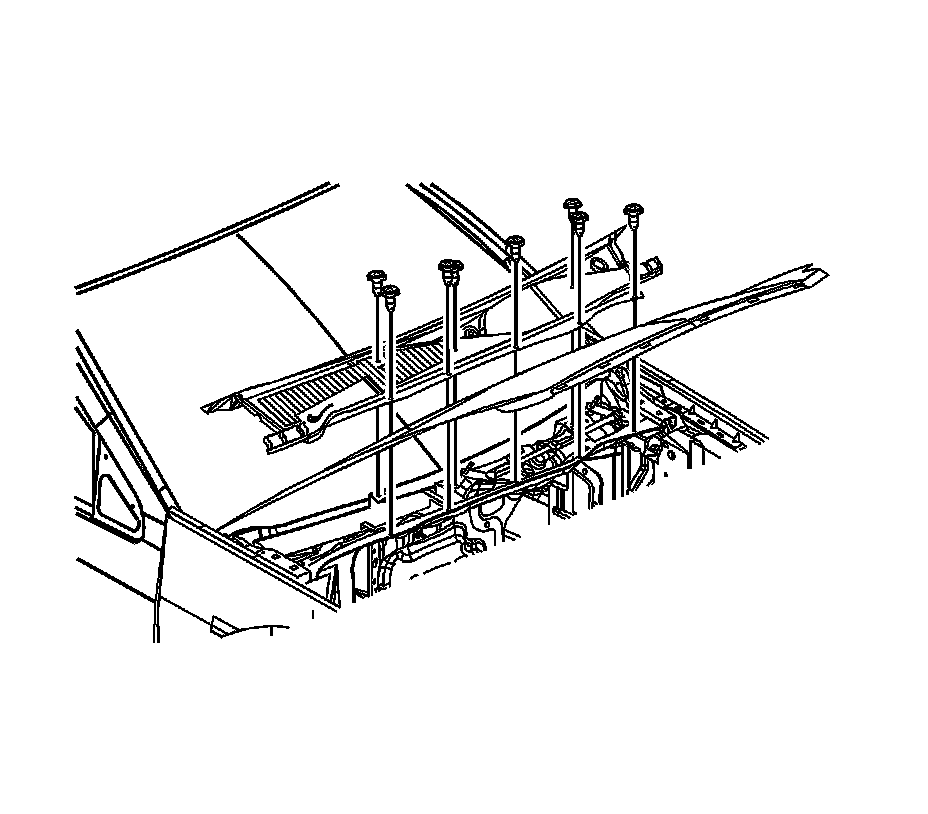
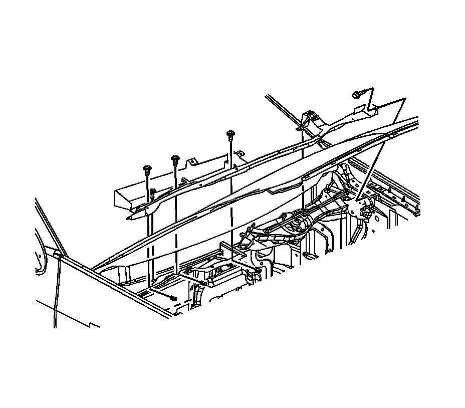

Cowl Moulding / Trim: Service and Repair
Air Inlet Grille Panel Replacement
Removal Procedure
1. Remove the windshield wiper arms. Refer to Windshield Wiper Arm Replacement (Windshield Wiper Arm Replacement) .

2. Remove the upper air inlet panel fasteners.
3. Remove the upper air inlet panel.

4. Remove the lower air inlet panel fasteners.
5. Remove the lower air inlet panel support bracket retainer from the master cylinder mounting stud.
6. Remove the lower air inlet panel.
Installation Procedure
1. Position the lower air inlet panel to the vehicle.
2. Install the lower air inlet panel support bracket retainer to the master cylinder mounting stud.
3. Install the lower air inlet panel fasteners.
4. Position the upper air inlet panel to the vehicle.
5. Install the upper air inlet panel fasteners.
6. Install the windshield wiper arms. Refer to Windshield Wiper Arm Replacement (Windshield Wiper Arm Replacement) .